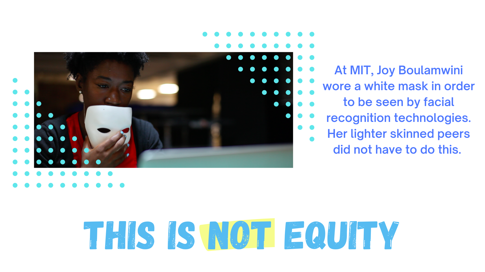
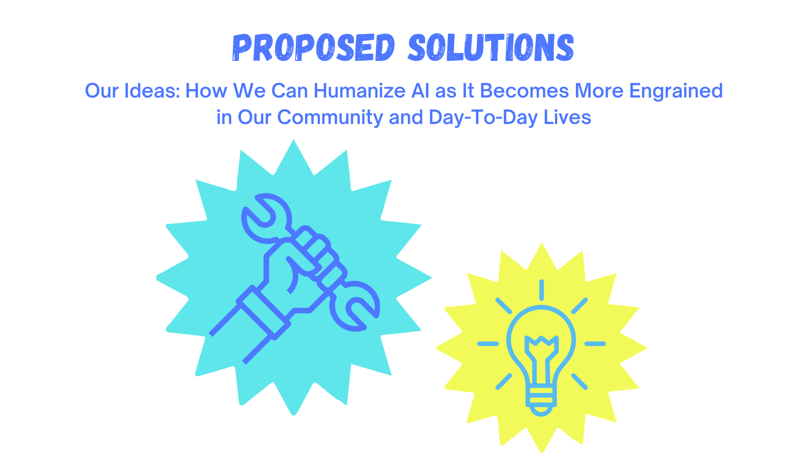

Facing Bias
How It Works
Biases in AI
Improving AI
Future Of AI
Our Story
Community
Solutions
Careers
References


![1. Companies could have people opt to put their face in a dataset when they set up Face ID on their device. Voluntary participation in a dataset could make future facial recognition algorithms more diverse. 2. Encourage minorities (women, people of color, etc) to get involved with the research and development of facial recognition technologies.3. Petition for lawmakers to create and uphold laws that ensure Al is equitable, accountable, and inclusive. Currently there is no federal legislation on Al in the United States. 4. Ensure companies get the consent/permission of the subjects featured in photos before taking them for use in their datasets. 5. Educate the public about facial recognition technologies and include them in important decisions regarding the future of Al.](assets/proposedSolutions2.png)